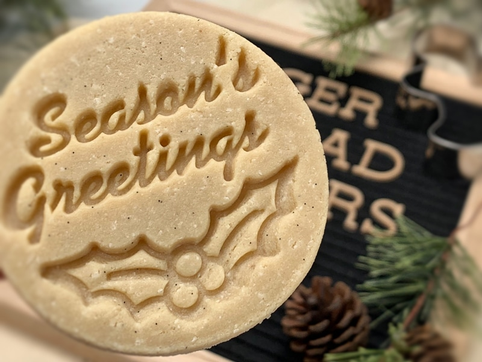

Happy Holidays from my Kitchen to Yours
I know that you are all busy during this time of the year so I will keep this brief. Bob and I just wanted to take a moment to thank you for being part of the Nouveauraw family. Your support, no matter what fashion it may come in, has been such a blessing to both of us. As a recipe creator and blogger, I lean heavily on all of you for encouragement and support, and not just financially.

When you comment on a recipe, it makes my day, even if it is a question, as we all grow from them (me too). So I would like to ask, as we move into the new year, to let me “hear” your voice. It’s easy, with each recipe, technique, or blog posting that I share, you can leave a comment right underneath them. You don’t have to fill out a form, put a stamp on it, or stand in line at the post office. :)
The bottom line is… I truly feel as though we are a family here on Nouveauraw. I have had both the pleasure and honor of getting to some of you very closely throughout the years. Through your correspondence (via email, the comment section, or on Facebook) I have laughed, cried, and have found myself growing in ways that I never knew was possible. So your “voice” means the world to me. It helps me to know that I am on the right track in helping you, my extended family, achieve a healthier lifestyle… even if it is just one recipe, one plate at a time. And this will help guide my path as we enter into the new year.
We wish you all a blessed and joyous holiday season. Whether you are surrounded by friends and family or if you spend it quietly home alone… please know that our hearts and love are with you. Bob, Amie Sue, and Milo (the pup)
© AmieSue.com